Zo weinig mogelijk, doch doelgericht
Een goed uitgebalanceerd voer maakt supplementen grotendeels overbodig. Wat overblijft is gericht bijsturen: op het juiste moment, met de juiste hoeveelheid.
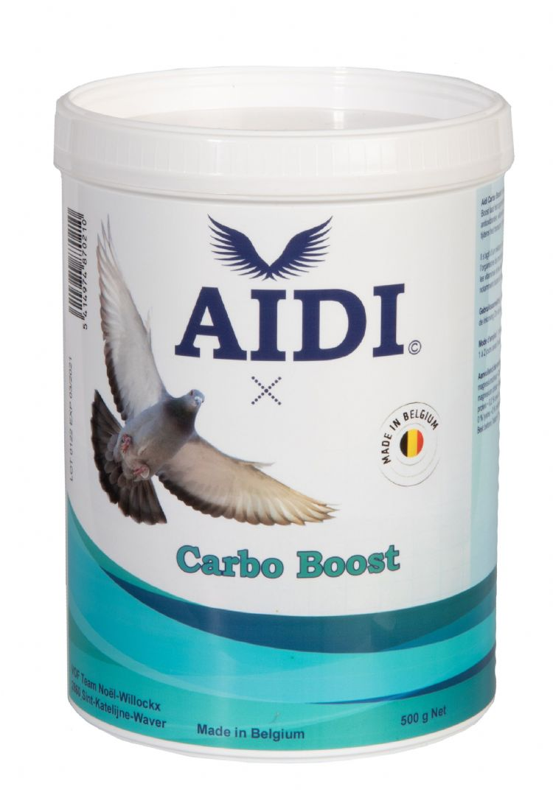
AIDI Carbo Boost
Energiemix die het organisme sneller glycogeen laat aanmaken.
Verkrijgbaar in500 g
Een wetenschappelijk uitgebalanceerde hoogwaardige energiemix die zorgt voor een prima werking van de spieren. De unieke samenstelling laat het organisme sneller glycogeen aanmaken, waardoor duiven langer aan een hogere snelheid kunnen vliegen.
De toegevoegde antioxidanten, vitamines en elektrolyten zorgen respectievelijk voor ondersteuning van het immuunsysteem, een betere stressbestendigheid en een betere regeling van de waterhuishouding tijdens transport, trainingen en wedstrijden.
Gebruiksaanwijzing
- 1 maatje (10 g) 1 maal per dag mengen met 600 g voer. Bevochtig het voer eerst met AIDI Omega Plus Olie Extra.
- Tijdens het vluchtseizoen: 1 à 2 dagen voor de inkorving.
- Om duiven beter en intenser te laten trainen: 3-5 dagen na elkaar, samen met AIDI Condition Booster.
Verkrijgbaar in
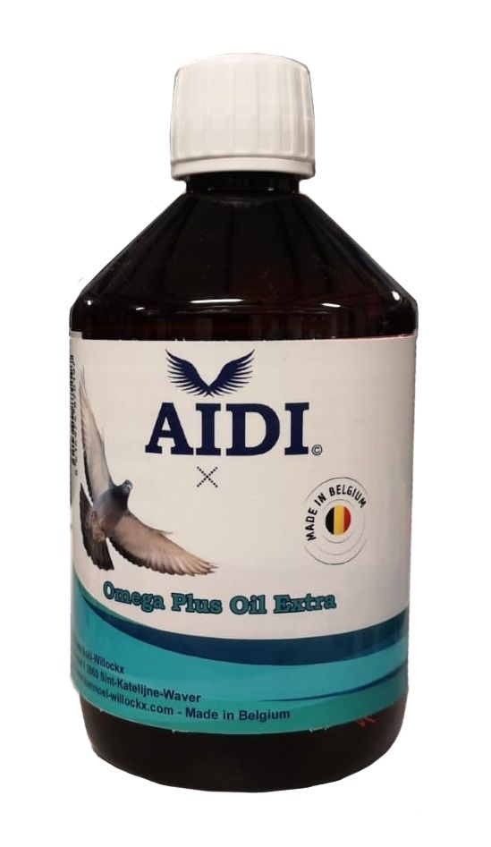
AIDI Omega Plus Olie Extra
Omega-3 oliën met lecithine, voor een snellere en efficiëntere vetzuuropname.
Verkrijgbaar in500 ml
Dagelijks gebruik verbetert de omega 3-6 verhouding van het voer aanzienlijk, wat zorgt voor een betere gezondheid en conditie. De toegevoegde lecithine zorgt voor een snellere, hogere en efficiëntere opname van deze vetzuren in het lichaam, waardoor duiven zonder problemen vaker en meer wedstrijdkilometers kunnen vliegen.
Lecithine beïnvloedt bovendien de werking van de hersenen en het oriënteringsvermogen positief. Het resultaat is daarnaast een bijzonder strak en glad verenpak.
Gebruiksaanwijzing
- Het hele jaar door, tijdens kweek, rui en vooral het vliegseizoen: 1 maal per dag 5 ml door 1 kg voer mengen, bij voorkeur 's avonds.
- Ook perfect te gebruiken om andere supplementen in poedervorm aan het voer te laten kleven.
- Flink schudden voor gebruik. Tip: meng de olie 's morgens door het voer voor het avondeten, zodat ze voldoende kan intrekken.
Verkrijgbaar in
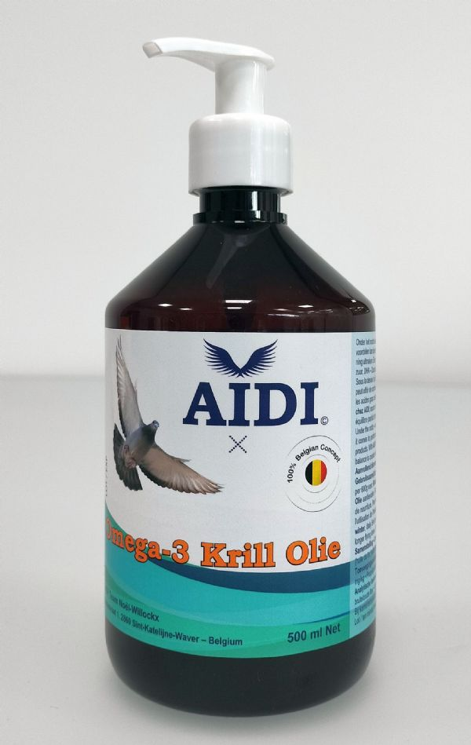
AIDI Omega 3 Krill Olie
Nieuw
Rijke bron van ALA, DHA en EPA, zonder de vervelende vissmaak.
Vetzuren maken de hoofdmoot uit van de energievoorziening van een duif. Een efficiëntere verbranding reduceert de hoeveelheid afvalstoffen gevoelig, en dat is precies waar omega-3 het verschil maakt.
AIDI Omega 3 Krill Olie is een rijke bron van hoogwaardig ALA (alfa-linoleenzuur), DHA (docosahexaeenzuur) en EPA (eicosapentaeenzuur). Alle voordelen van de perfecte omega-3 balans, zonder de vervelende vissmaak.
Gebruiksaanwijzing
- Vastzittende duiven, duiven die niet aan wedstrijden deelnemen en gedurende de winter: dagelijks 5 ml per 600 g voer.
- Wedstrijdduiven van 1 tot 3 uur vliegen: 5 ml per 600 g voer, 1 dag voor en op de dag van inkorving.
- Moeten er meer vlieguren gevlogen worden, dan blijft AIDI Omega Plus Olie aanbevolen.
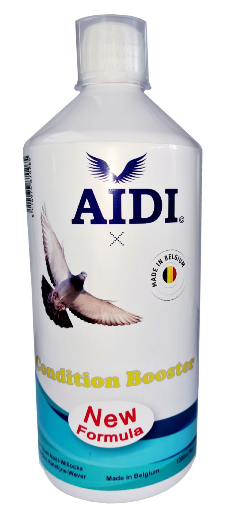
AIDI Condition Booster
Conditietonic van vitamines, aminozuren en mineralen voor het vliegseizoen.
Verkrijgbaar in1000 ml
Activeert de stofwisseling, zorgt voor een groter uithoudingsvermogen en een betere zuurstofopname, en ondersteunt het spierstelsel.
Zorgt bovendien voor een prima conditie en de opbouw van meer energie en energiereserves, waardoor de vluchtprestaties verbeteren. De werking is verhoogd bij gelijktijdige toediening met AIDI Carbo Boost.
Gebruiksaanwijzing
- 30 ml per kg volledig diervoeder, of 10 ml per liter drinkwater.
- Vluchtseizoen: de dag voor inkorving, en bij thuiskomst samen met AIDI Recup Fast voor een supersnel herstel.
- Bij slecht trainen door mindere conditie: 2-5 dagen samen met AIDI Carbo Boost.
- Tijdens het kweekseizoen: 3-5 dagen bij de overgang van kropmelk naar vast voer.
- Tijdens de rui: 1 maal per week; verduisterde en bijgelichte duiven 2 maal per week.
Verkrijgbaar in
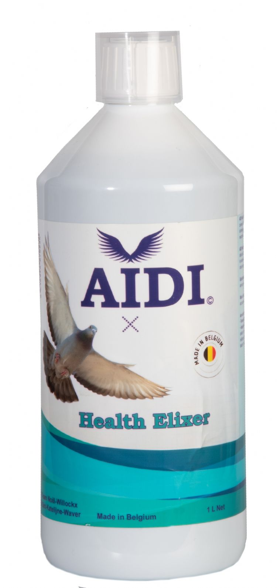
AIDI Health Elixir
Tinctuur van twintig kruiden, bladeren, wortels en planten.
Verkrijgbaar in1000 ml
Met onder meer een antioxidante werking en ondersteuning van de bloeddoorstroming. Dat resulteert in een betere donsrui en brengt de duiven op korte tijd in topvorm.
Verhoogt de weerstand en verbetert het immuunsysteem, ondersteunt de luchtwegen, zorgt voor een hogere zuurstofopname en werkt eetlustopwekkend. Na een meerdaagse kuur hebben duiven mooi roze borstspieren, krijtwitte neuzen en oogranden.
Gebruiksaanwijzing
- 20 ml per liter water, of over 600 g voer per 20 duiven.
- Ter voorbereiding van de kweek- of vliegperiode: 8 à 10 dagen voor het koppelen of de aanvang van de vluchten.
- Tijdens het vluchtseizoen: 1 à 2 maal per week na de vlucht. Tijdens de rui: 3 à 4 maal per week.
Verkrijgbaar in
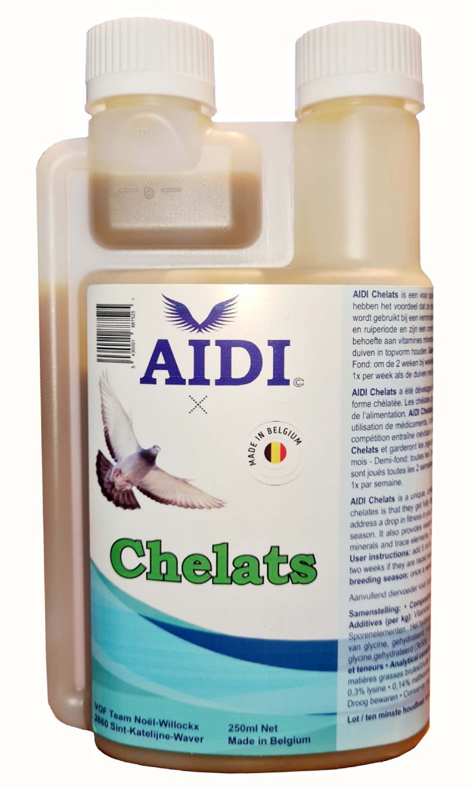
AIDI Chelats
Vitamines, sporenelementen en mineralen in chelaatvorm.
Verkrijgbaar in250 ml
Chelaten hebben het voordeel dat ze door het lichaam volledig opgenomen worden en zo makkelijk tekorten in het voer kunnen aanvullen.
Te gebruiken bij een verminderde conditionele toestand. Het intensieve wedstrijdritme zorgt voor een verhoogde behoefte aan vitamines, mineralen en sporenelementen; regelmatig gebruik vult die aan en houdt duiven in topvorm tijdens het vliegseizoen. Ook essentieel voor de ontwikkeling van de jongen tijdens de kweek en van het nieuwe verenkleed tijdens de rui.
Gebruiksaanwijzing
- Vitesse: maandelijks 10 ml op 1 kg voer, de dag voor de inkorving.
- Halve fond: om de 3 weken. Zware halve fond: om de 2 weken bij wekelijks vliegen, om de 3 weken bij tweewekelijks vliegen.
- Zware fond en overnachtfond: 10 ml op 1 kg voer, de dag voor de inkorving.
- Na ziekte en medicatie: 2 dagen 10 ml per kg voer. Na enting: 10 ml per kg voer.
- Tijdens de kweek en de rui: 1 maal per week 10 ml per kg voer.
Verkrijgbaar in
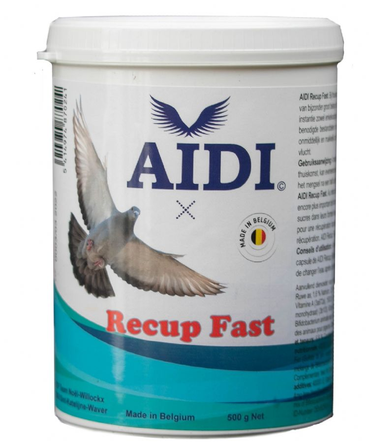
AIDI Recup Fast
Wateroplosbaar herstelmengsel voor onmiddellijk na thuiskomst.
Verkrijgbaar in500 g
Bij thuiskomst van een wedstrijd is het bijzonder belangrijk dat de duif de verbruikte reserves zo snel mogelijk kan aanvullen: enkelvoudige en meervoudige suikers, onmiddellijk beschikbare vetzuren en bouwstoffen voor eiwitten.
AIDI Recup Fast bevat die bestanddelen in de juiste verhoudingen voor een snelle recuperatie en een vlot herstel. Het is het product bij uitstek voor na de vlucht.
Gebruiksaanwijzing
- 4 maatschepjes (20 g) per liter drinkwater, onmiddellijk na thuiskomst ter beschikking stellen.
- Ververs het mengsel na een half uur: door oxidatie van licht en lucht daalt de kwaliteit.
Verkrijgbaar in
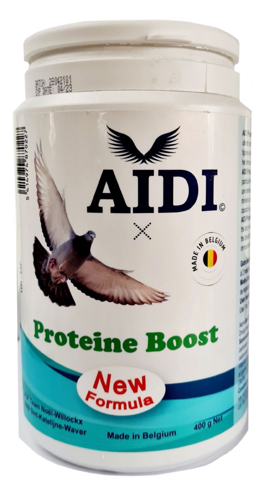
AIDI Proteine Boost
Hoogwaardige whey-eiwitten met een bijzonder hoge biologische waarde.
Verkrijgbaar in400 g
Deze eiwitten worden uiterst snel door het lichaam opgenomen. Dat zorgt voor een sneller herstel na de vlucht bij duiven die gevoelig zijn voor overbelasting van de spieren, een betere groei en ontwikkeling van de jongen tijdens de kweek, en een goede opbouw van de bevedering tijdens de rui.
De toevoeging van extra mineralen helpt de natuurlijke weerstand te versterken en ondersteunt het immuunsysteem, zodat duiven in een prima gezondheid verkeren en hun prestatievermogen verhoogd wordt.
Gebruiksaanwijzing
- 15 g (3 maatlepels) per kg volledig diervoeder. Bevochtig het voer eerst met AIDI Omega Plus Olie Extra.
- Tijdens de rui en de kweekperiode: 1 à 2 maal per week.
- Tijdens de overgang van kropmelk naar vast voer: 3-5 dagen.
- Vluchtseizoen: na een zware vlucht 2 à 3 maaltijden. Na ziekte of enting: 2 à 3 dagen.
Verkrijgbaar in
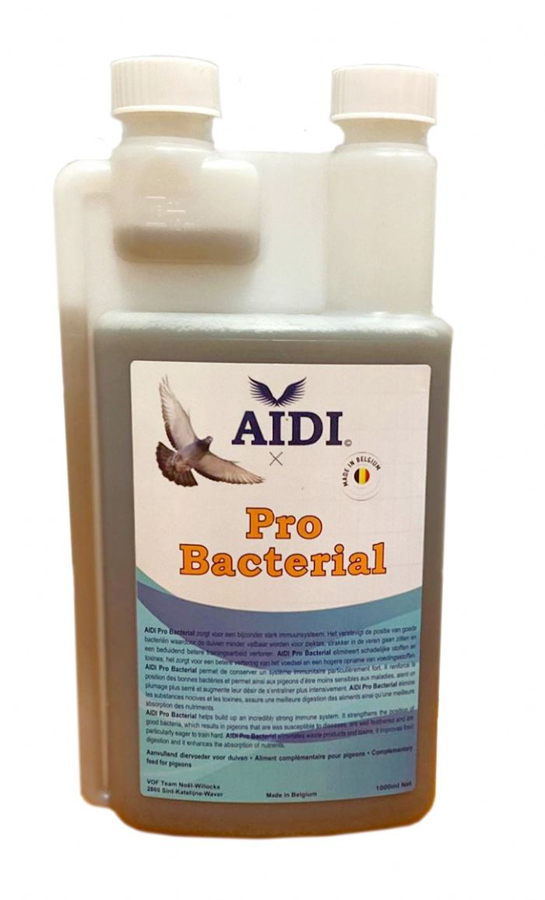
AIDI Pro Bacterial
Ferment van rietsuikermelasse dat de positie van de goede bacteriën verstevigt.
Verkrijgbaar in1000 ml
Een goede gezondheid, immuniteit, weerstand en vitaliteit begint bij een goede darmflora. Onevenwichtige of vervuilde voeding in de reismanden, vuil drinkwater tijdens transport, stress, het gebruik van antibiotica en vermoeidheid door te zware vluchten verstoren het evenwicht tussen goede en slechte bacteriën.
AIDI Pro Bacterial zorgt voor een betere vertering van het voedsel en een hogere opname van voedingsstoffen, en helpt zo de natuurlijke weerstand te versterken. Duiven gaan er strakker door in de veren zitten en vertonen betere trainingsarbeid.
Gebruiksaanwijzing
- Tijdens kweek, rui, vliegseizoen en rustperiode: 10 ml per liter water (dagelijks te verversen) of 10 ml over 600 g voer.
- Laat stadswater goed ontluchten: het bevat chloor.
- Het product kan na verloop van tijd wat beginnen vlokken. Dat is volkomen normaal en doet niets af aan de kwaliteit.
Verkrijgbaar in
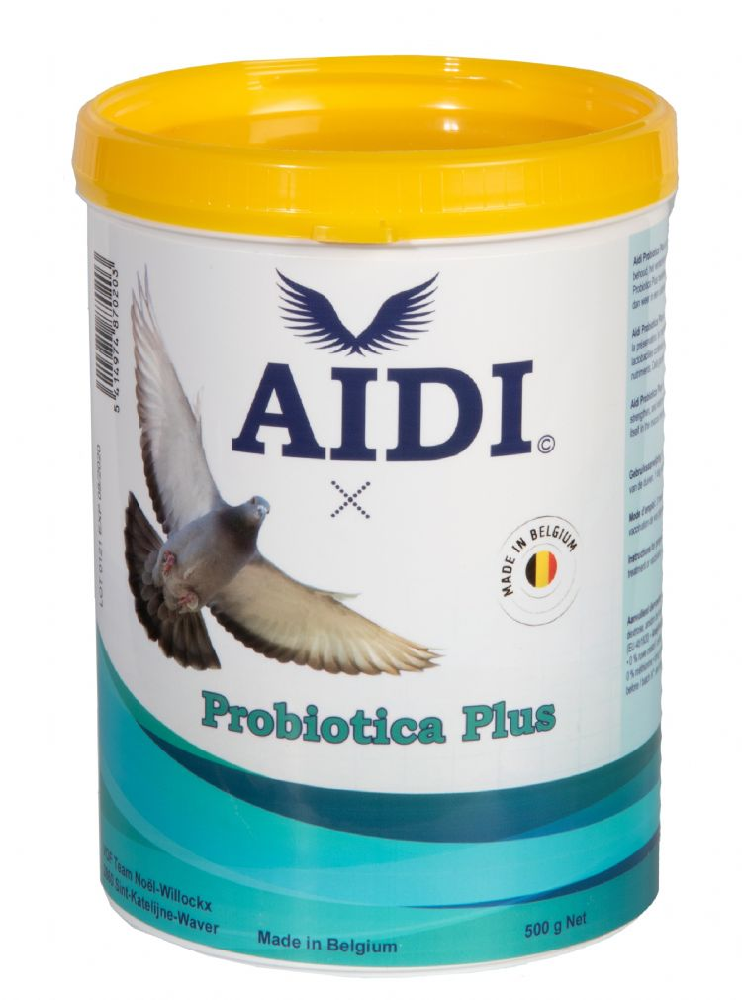
AIDI Probiotica Plus
Hoog geconcentreerde pre- en probioticamix voor natuurlijke weerstand.
Verkrijgbaar in500 g
Bevordert en stimuleert een goede darmflora, helpt de natuurlijke weerstand te versterken en speelt een rol bij de ziekteafweer.
De hoge concentratie lactobacillen nestelt en vermeerdert zich in de slijmvliezen van de dunne darm en bevordert zo de vertering van de voedingsstoffen. Dat resulteert in een uitstekende vitaliteit, gezondheid en een zijdezacht verenkleed.
Gebruiksaanwijzing
- 3 maatlepels (15 g) mengen met 1 kg voer. Bevochtig het voer eerst met AIDI Omega Plus Olie Extra.
- Tijdens het vluchtseizoen: 1 dag voor de inkorving, ter bevordering van de conditie.
- Tijdens de rui- en kweekperiode: 2 maal per week.
- Na een antibioticakuur of enting: 3 dagen, 1 maal per dag.
Verkrijgbaar in
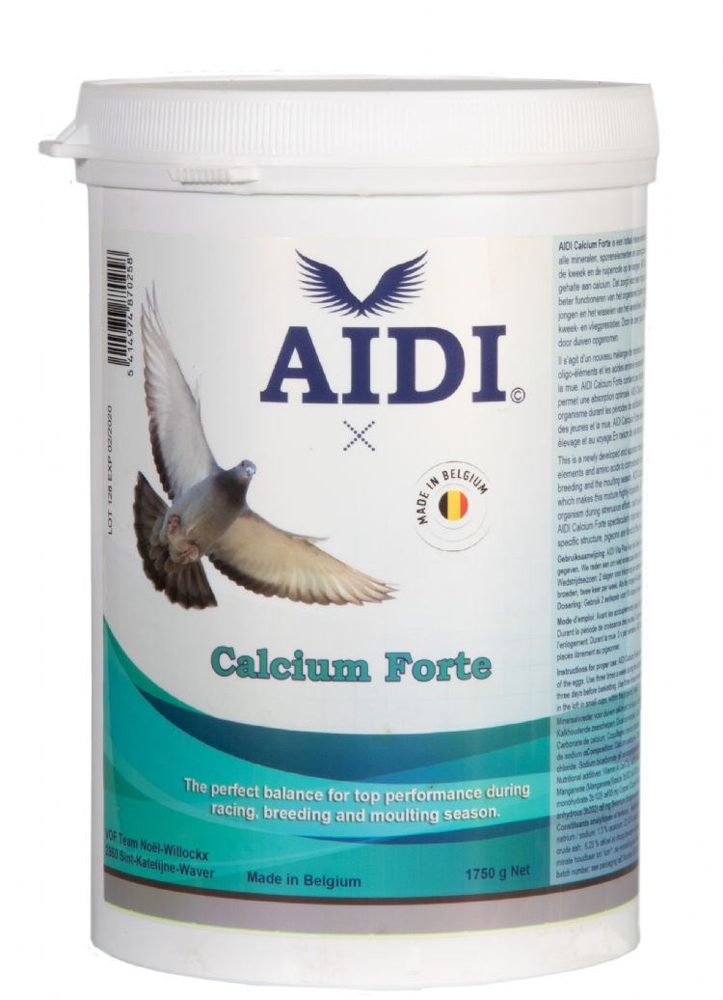
AIDI Calcium Forte
Mineralenmengsel met weinig fosfor en een hoog calciumgehalte.
Verkrijgbaar in1,750 kg
Bevat alle mineralen, sporenelementen en aminozuren om tekorten in het voer op te vangen tijdens het vliegseizoen, de kweek en de ruiperiode. Het lage fosfor- en hoge calciumgehalte zorgt voor een hoge opneembaarheid.
Zorgt voor een beter functioneren van de stofwisseling tijdens zware inspanningen zoals wedstrijden, de opfok van jongen en het wisselen van het verenkleed, en verbetert de kweek- en vliegprestaties aanzienlijk. Door de geschikte structuur wordt het graag door duiven opgenomen.
Gebruiksaanwijzing
- 1,5 g per duif per dag, in kleine potjes op het hok beschikbaar stellen.
- Van het koppelen tot aan het leggen van de eieren: dagelijks.
- Tijdens de opgroeiperiode van de jongen: 3 maal per week.
- Tijdens het vluchtseizoen: 1 maal per week, 3 dagen voor de inkorving. In de ruiperiode: 3 maal per week.
Verkrijgbaar in
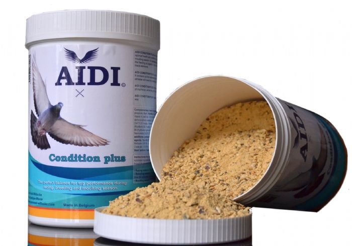
AIDI Condition Plus Minerals
Mineralen, vitamines en grit voor vlieg-, kweek- en ruiperiode.
Verkrijgbaar in1,750 kg
Ontwikkeld op basis van de nieuwste wetenschappelijke kennis over het voeren van duiven: een mix van verschillende mineralen en vitamines die duiven graag eten. Het bevat alles wat onze atleten nodig hebben voor het kweken en voor topprestaties tijdens de wedstrijden.
Het hoge calciumgehalte in verhouding tot fosfor en de aanwezige grit zorgen voor een zeer goede vertering van het voer. Zo worden de tekortkomingen in de voeding op de juiste manier aangevuld.
Gebruiksaanwijzing
- 2,5 g per duif per dag, in kleine potjes op het hok beschikbaar stellen. Het hele jaar door 2 à 3 keer per week.
- Meng er wat snoepzaad door voordat u het aan de duiven geeft.
- Vluchtseizoen: 2 dagen vóór de inkorving en bij terugkomst van de vlucht.
- Kweekperiode: tijdens het broeden 2 maal per week; zijn de jongen 4-5 dagen oud, dan dagelijks. Ruiperiode: 2 maal per week.
Verkrijgbaar in
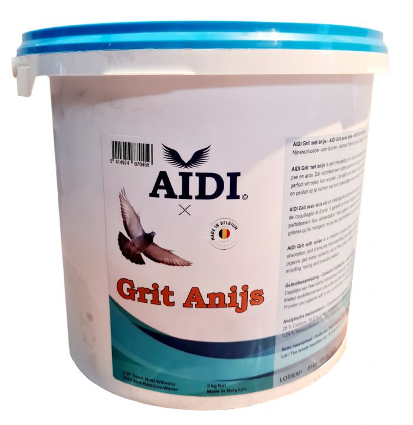
AIDI Grit met anijs
Grit met kiezel en oesterschelpen, bewust zonder roodsteen.
Verkrijgbaar in5 kg
Grit zijn de tanden van onze duiven: hoe beter het voer vermalen wordt, hoe meer voedingsstoffen eruit gehaald worden. Kiezel en oesterschelpen blijven langere tijd in de maag aanwezig en helpen daar het voer vermalen, wat de opname van voedingsstoffen vergroot. In de meeste gritsoorten op de markt zitten die nauwelijks, omdat ze relatief duur zijn.
Roodsteen wordt daarentegen mee vermalen met het voer en levert niets op. Duiven blijven ervan eten om calcium op te nemen, maar door de verkeerde calcium-fosforverhouding neemt het duivenlichaam die calcium niet op. Van onze grit met anijs hebben duiven maar heel weinig nodig. Dat is volkomen normaal.
Gebruiksaanwijzing
- Dagelijks een heel kleine hoeveelheid vers in een potje ter beschikking stellen van de duiven.
Verkrijgbaar in
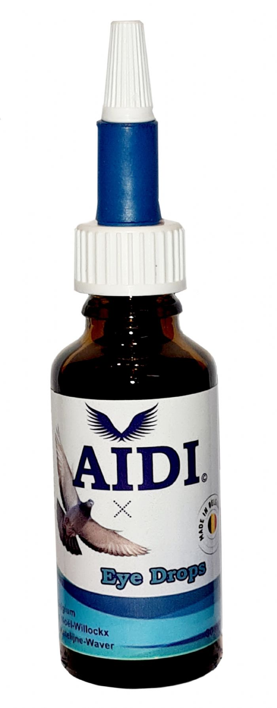
AIDI Eye Drops
Verzorgt en reinigt de ogen, de neus en het traankanaal.
Verkrijgbaar in30 ml
Voor een perfect verzorgende en reinigende werking van ogen, neus en traankanaal. AIDI Eye Drops voorkomen en verzachten tevens irritaties van het oogvlies en hebben een herstellende werking.
Gebruiksaanwijzing
- 1 druppel in elk oog voor de inkorving en na de wedstrijd.
- Bij irritatie of ontsteking van het oogvlies: 3 tot 5 keer per dag 1 druppel in elk oog.
Verkrijgbaar in
Niets gevonden
Pas uw zoekopdracht of filters aan om meer resultaten te zien.
Waar koopt u AIDI?
AIDI is verkrijgbaar bij ruim zestig verkooppunten en invoerders in elf landen. Of bel Eddy of Ivan rechtstreeks. Advies kost niets.